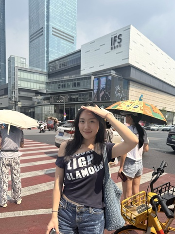

基本信息
1-page Resume (Encouraged，PDF格式，中英文均可)
Portfolio or Additional Files (Optional，PDF或视频)
请把文件名命为：first name_Last name_netid
请上传一张自己的照片，普通的生活照就可以！（只是为了面试的时候我们可以把你认出来）

查看原图
查看原图
通用问题部分
为什么想要加入CSSA？
我认为CSSA是一个能够让我锻炼组织执行力、团队合作、认识更多学长学姐、继续为远在他乡的华人学生带来归属感的机会。因为自己在新生时期就是因为CSSA的新生群以及活动交了许多朋友，感受到了国内节日的氛围，我也很希望能够将这样的温度带给别人。同时，我希望能够借此机会锻炼自己的能力，拓展自己的社交圈。
你心目中CSSA是个什么样的组织？
CSSA是一个让华人学生融入康奈尔的组织。开学前，微信群就开始让各地华人学生连接了起来。线下新生见面会将这样的联系带到了线下。新生手册更是一张让我开始认识学校的“入门地图”。入校后，看到了CSSA举办的中秋、春节以及万圣节活动，每一个都给我带来着属于家乡的归属感，宣传着东方文化，促进着中美文化交流。
加入CSSA之后，你最想在康奈尔校园内实现的事情是什么？
我特别想和其他成员一起举办一次活动，不论是负责幕后还是台前工作，比如中秋，或者是之后可能可以举办的一些带领新生探索学校的活动。我希望能够看到其他华人学生能在其中找到乐趣。
财务部
第一志愿为什么选择这个部门？
我选择财务主要是因为我对资金规划和资金申请都有着很大兴趣，并且我深知财务对于各种活动来说都是关键的一环。因为有工程背景，我认为自己相对来说会对数字比较敏感，也比较习惯注重数字方面的细节，比较严谨。即便目前对财务没有很多的专业背景，我会和学长学姐们积极地学习财务知识，做好CSSA各种活动的财务基础。
秘书处
如果让你选择一周的工作，你想做什么？
写一封让新生感到温暖的欢迎邮件
当别人第一次见到你时，他们会说“哇，你居然___！”（请填空）
还会打拳
某天深夜，一位新生在微信上非常焦急地询问：‘我的航班延误了了，接机联系不上怎么办？现在半夜一个人在机场好害怕...’
作为小助手值班的你，会如何回复？请写出具体回应（注意：你无法直接解决问题，但需要让TA感到安心）。
同学，你先别急。你先找个地方坐着好好休息一下。飞机延误确实是没有办法。我们这里有一些靠谱的资源（例如可能约车司机/ourbus网站，或者是其他可以帮助这个同学到达康奈尔的方法）
你希望从秘书处的伙伴们和这份工作中获得什么？（比如：深厚的友谊？一份完美的简历？超硬核的技能？还是单纯的快乐？）
同学你好，先别急。你先找个地方坐一下，小助手这里有几个建议。赶不上接机的话也没有关系，我们这里有一些靠谱的方式你或许可以看看？（例如可能约车司机/ourbus网站，或者是其他可以帮助这个同学到达康奈尔的方法）你也可以在群里问问有没有同一个航班出现同一个问题的同学，搭个伴的话会更加安全，这样会更安全。同学也别忘记和父母联系，报一个平安。时间等的比较久的话，同学你也可以看看放不放便预约机场里的酒店休息一下。之后有什么问题可以随时问小助手，小助手这边会一直在线，尽力解答同学的问题
（可选）有人说“我们属于我们投入过心力的地方”。你希望自己在秘书处留下怎样的痕迹？
我希望或许能在小助手那里留下我发的信息，新生手册里留下我的建议，网站上留下我的小设计
(可选) 秘书处传统：每次团建都要尝试一个奇奇怪怪的新活动。你有什么离谱但有趣的idea吗？（多奇怪都行）
饮料diy：轮流倒一个自己喜欢（想选）的饮料，倒到一个大杯子里，最后大家一起品尝。
第二志愿为什么选择这个部门？
我对部门内小助手、手册以及网站都非常感兴趣。之前因为经常做一些分享会类的活动，我喜欢也善于和家长同学沟通。我在康奈尔的一年对于各方面都有很多感受，比如课程、美食等等，所以很希望能够用自己的经历帮助更多新生。与此同时，作为一个ECE专业的，我对开发网站及新功能也很感兴趣。我很期待在这方面多学习。
是否接受部门调剂？
是